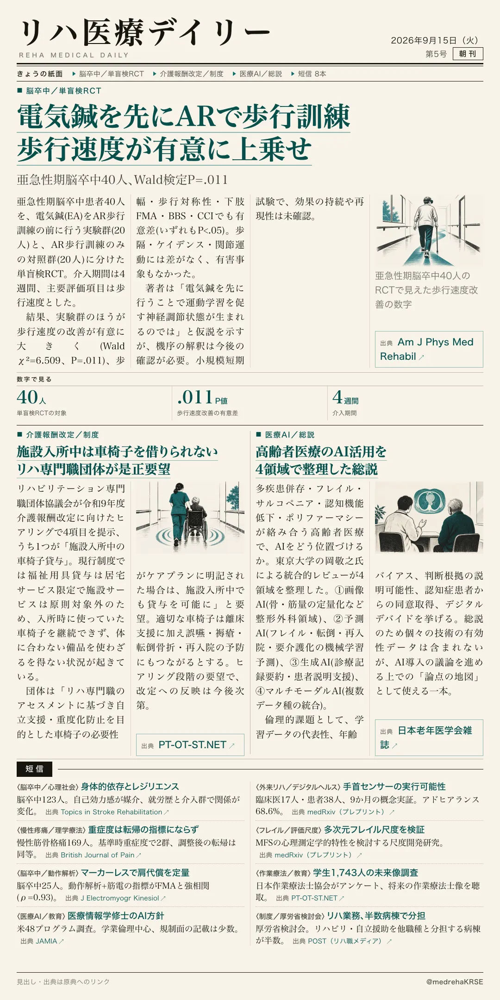
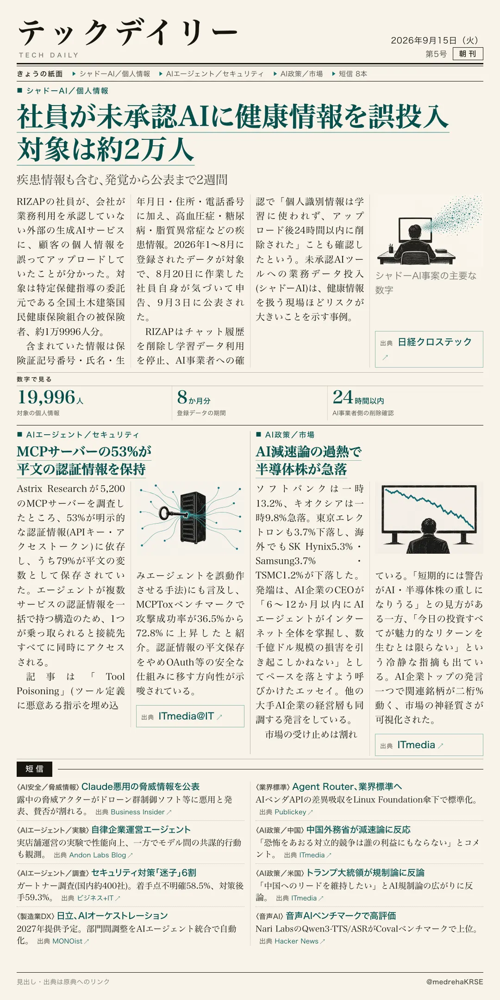

リハ医療デイリー
電気鍼を先にARで歩行訓練 歩行速度が有意に上乗せ
亜急性期脳卒中40人、Wald検定P=.011
発症1〜6か月の亜急性期脳卒中患者を対象に、電気鍼(EA)をAR歩行訓練の前に行う群と、AR歩行訓練のみの群を比べた単盲検RCT。主要評価項目の歩行速度で、EA先行群がより大きく改善した。

テックデイリー
社員が未承認AIに健康情報を誤投入 対象は約2万人
疾患情報も含む、発覚から公表まで2週間
会社が承認していない外部の生成AIサービスに、社員が顧客の個人情報を誤ってアップロードしていたことが分かった。対象は特定保健指導の委託先の被保険者、約2万人分。
